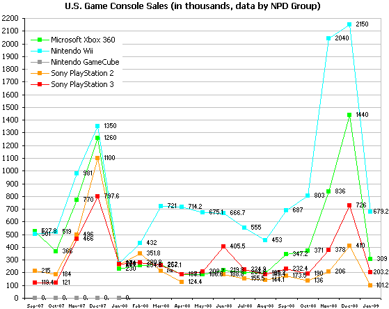
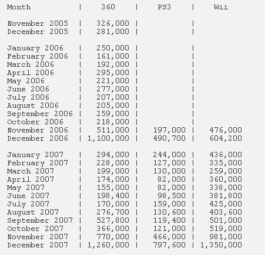

Video Game Console SalesPosted on 3/5/2014 | |
Found in 1967, NPD Group (formerly National Purchase Diary) is a leading global market research company. NPD provides consumer and retail information to manufacturers and retailers. They cover industries from automotive to video games. | |
|
For this post I am interested in the monthly video game sales data which is only available for US market. The graph on the right displays the game console sales figure for well-known brands. An interesting thing about this chart is that the study period covers time before and after 2008 finaicial crisis (with the sales peak in December 2008 when the Labor Department reported more than half million jobs lost in prior month and the arrest of Bernard Madoff in December for the largest financial fraud in U.S. history) Ok, back to business. I think the original simple line chart should do the job. But there are few places can be improved for better. First, I will lose the data labels to gain more clarity. Then, the grid lines seem to introduce more confusion. People who viewing this chart are probably interested to grasp a bigger picture rather than to try to match vertical and horzontal axises for all detailed sales number. |
 |
|
For my blog post work, I am going to try to deliver monthly sales figure using a stacked bar chart.
Finding data source is the first step.
Since the raw data table
is clean and simple, I can use Excel to quickly generate the data set I need.
Next time I want to use Python to do data scraping.
In addition, note that data for PS3 and Wii were not available prior to October 2006.
I exclude this information to match the time frame on the original line chart.
Therefore top three game console players - XBox, PS3 and Wii are compared here.
 | |
|
After the sample set was generated, I chose D3 for data visualization design. Ideally I would like to see interactive bar chart display, such as detailed sales figure thru tooltips, for each year and console. The work is still in progress... | |